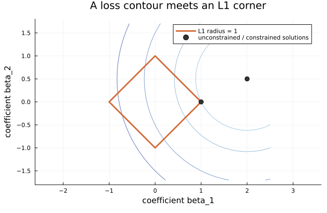

The lasso problem
Prerequisites: vectors, matrix multiplication and least-squares regression.
After this chapter you can:
- Explain the fit-versus-complexity tradeoff in the lasso objective.
- Choose a consistent loss scale and interpret the penalty level.
- Fit a small example and distinguish prediction from variable selection.
The lasso
Given a response vector y, a matrix X of n rows and p columns, and a coefficient vector beta, the lasso minimizes
\[\frac{1}{2n}\|y-X\beta\|_2^2+\lambda\sum_{j=1}^p|\beta_j|.\]
The first term fits the observations. The L1 penalty shrinks coefficients and can make them exactly zero. A larger lambda strengthens this penalty relative to the scaled loss.
Separate the model from the algorithm
Write the objective as
\[F(\beta)=f(\beta)+g(\beta),\qquad f(\beta)=\frac{s}{2}\|y-X\beta\|_2^2,\qquad g(\beta)=\lambda\|\beta\|_1,\]
where s > 0 scales the loss and lambda >= 0 sets the penalty. Here we use s = 1/n. The smooth term measures prediction errors; the nonsmooth term charges for large absolute coefficients. The objective is convex: the squared norm composed with a linear map and the L1 norm are convex, and their nonnegative sum remains convex. Thus a local minimizer is a global minimizer; convexity alone does not guarantee a unique coefficient vector. See Boyd and Vandenberghe, Convex Optimization, Chapters 3–4.
An optimizer chooses coefficients for the stated objective. The statistical choice of lambda comes from the task, for example prediction assessed on held-out observations. A good value for prediction need not select precisely the predictors that generated the data. The original lasso paper by Tibshirani introduces the combination of shrinkage and variable selection.
The units matter. Replacing s = 1/n by s = 1 multiplies the loss by n. To preserve the same minimizers, multiply lambda by n too. Changing the units of one predictor changes the coefficient needed for the same prediction, and therefore its penalty. Choose centering and scaling as part of the model; the examples here do not add an unpenalized intercept. The package's loss-scale and input rules are in the input contract.
Why the geometry favors zeros
For a suitable radius, the penalized problem is related to minimizing the least-squares loss over an L1 ball. In two dimensions that ball is a diamond. Its corners lie on the coordinate axes, so a contour of the loss can first meet the constraint at a point with one zero coordinate. This illustrates why zeros are natural, without claiming that every lasso solution must be sparse.
using Plots
axis_grid = range(-1.5, 2.5; length=161)
vertical_grid = range(-1.7, 1.7; length=141)
geometry = contour(axis_grid, vertical_grid,
(b1, b2) -> ((b1 - 2)^2 + (b2 - 0.5)^2) / 2;
levels=[0.625, 1.25, 2.5, 4.0], color=:blues, colorbar=false,
xlabel="coefficient beta_1", ylabel="coefficient beta_2",
aspect_ratio=:equal, size=(660, 430), title="A loss contour meets an L1 corner")
plot!(geometry, [1, 0, -1, 0, 1], [0, 1, 0, -1, 0];
label="L1 radius = 1", color="#d46b38", linewidth=3)
scatter!(geometry, [2, 1], [0.5, 0]; label="unconstrained / constrained solutions",
color="#333333", markersize=5)
savefig(geometry, "lasso-geometry.svg")
In this picture the unconstrained solution is (2, 0.5) and the constrained solution is (1, 0). The second predictor is removed, and the first coefficient also shrinks. Later chapters explain that corner using subgradients and soft-thresholding.
Fit the first model
This three-observation problem has orthogonal columns, so its solution can be checked by hand. The scalar coordinate-descent contract specifies the package behavior used here.
using ProximalBase, ProximalSolvers
X = [1.0 0.0; 0.0 2.0; 0.0 0.0]
y = [2.0, -2.0, 0.5]
s, lambda = 1 / length(y), 0.1
beta = zeros(2)
result = solve!(beta, s * LeastSquaresLoss(y, X), NormL1(lambda),
CDSolver(order=:cyclic, momentum=false))
@assert isapprox(beta, [1.7, -0.925]; atol=1e-7)
(; coefficients=beta, predictions=X * beta,
mean_squared_error=sum(abs2, y - X * beta) / length(y))(coefficients = [1.7, -0.925], predictions = [1.7, -1.85, 0.0], mean_squared_error = 0.12083333333333333)The last observation cannot be fitted because its design row is zero. A solver can find the correct optimum while leaving that residual nonzero. Conversely, a tiny training residual does not establish predictive performance on new data.
For richer models, follow the worked examples on change-point detection and sparse additive regression. They reuse the optimization ideas while changing the statistical interpretation.
Exercises
- For the displayed coefficients, compute the loss and penalty separately. Why is the mean squared error not the objective printed by the solver?
- Replace
s = 1/nbys = 1. What penalty produces the same solution? - Coding: solve the example with
lambdaequal to0,0.1,1and2. Record prediction error and the number of nonzero coefficients. Which fit minimizes training error, and why is that insufficient for choosinglambda? - Rescale the second column of
Xby ten. How must its coefficient change to preserve the predictions? Does the unweighted L1 penalty remain the same?
Exercise answers
- The loss is
sum(abs2, y-X*beta)/(2n)and the penalty islambda*sum(abs, beta). The mean squared error has no penalty and no factor of one half. - Use
lambda = 0.3, multiplying the entire objective by three. - The nonzero counts are
2, 2, 1, 0. With no penalty the training error is smallest; it does not account for future prediction or the cost of fitting noise. Check the numbers withsolve!rather than using its stopping flag as an accuracy measure; see results and stopping. - Divide that coefficient by ten. Its contribution to the L1 penalty also falls by ten, so the model's penalty changes unless the weighting is adjusted.
Continue to optimality and KKT conditions.